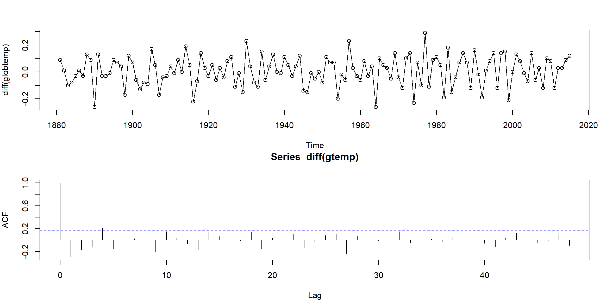

Sec 1 Example of Time Series Data
1.1 Characteristics of Time Series
1.1.1 Practical data
判斷以下範例為何不是 (weakly) stationary
Example 1.1 (p.2)

Example 1.2 (p.3)
Example 1.3 (p.3) Voice record
Example 1.5 (p.5)
par(mfrow = c(2,1)) # set up the graphics
plot(soi, ylab="", xlab="", main="Southern Oscillation Index\nindex of ocean ccurrent 洋流")
plot(rec, ylab="", xlab="", main="Recruitment\nindex of fish amount")Example 1.6 (p.5) MRI data
par(mfrow=c(2,1))
ts.plot(fmri1[,2:5], col=1:4, ylab="BOLD", main="Cortex")
ts.plot(fmri1[,6:9], col=1:4, ylab="BOLD", main="Thalamus & Cerebellum")
mtext("Time (1 pt = 2 sec)",side = 1,line = 2)Example 1.7 (p.6)
1.1.2 White Noise (WN)
Example 1.9 (p.10)
set.seed(0921)
w = rnorm(500,0,1) # 500 N(0,1) variates
v = filter(w, sides=2, filter=rep(1/3,3)) # moving average
par(mfrow=c(2,1))
plot.ts(w, main="white noise")
plot.ts(v, ylim=c(-3,3), main="moving average")\[W_t\sim N(0,1)\]
- sides=2, center at lag 0
\[V_t=\frac1 3(W_{t-1}+W_t+W_{t+1})\]
- sides=1, for past value only
Example 1.10 (p.11)
set.seed(0921)
w = rnorm(550,0,1) # 50 extra to avoid startup problems
x = filter(w, filter=c(1,-.9), method="recursive")[-(1:50)] # remove first 50
plot.ts(x, main="autoregression")\[W_t\sim N(0,1)\] \(X_t=W_t-0.9W_{t-1}\) (default sides=1)
\(X_t\) and \(X_{t+1}\) are negatively correlated, means when- \(X_t\uparrow\:\Rightarrow X_{t+1}\downarrow\)
- \(X_t\downarrow\:\Rightarrow X_{t+1}\uparrow\)
1.1.3 Random Walk
Example 1.11 (p.11)
set.seed(154) # so you can reproduce the results
w = rnorm(200,0,1); x = cumsum(w) # two commands in one line
wd = w +.2; xd = cumsum(wd)
plot.ts(xd, ylim=c(-5,55), main="random walk")
lines(x, col=2)
lines(.2*1:200,lty="dashed")
legend('topleft', col=c(1,2,1), lty=c(1,1,2),
legend = c(expression(X[d]),expression(X[t]),expression(E(X[t]))))\(X_t\) is not stationary, \(\because Var(X_t)\) depends on t.
\(X_d\) is not stationary, \(\because E(X_d)\) depends on t.
- \(W_t\sim N(0,1)\)
- \(X_t=W_1+W_2+...+W_t\)
- \(Var(X_t)=Var(W_1)+Var(W_2)+...+Var(W_t)=1\cdot t=t\)
- \(W_d=W_t+0.2\)
- \(X_d=\sum W_d=\sum W_t+0.2\cdot t\)
- \(E(X_d)=0.2\cdot t\)
\(E(aX+b)=aE(X)+b\)
\(Var(aX+b)=a^2Var(X)\)
1.1.4 Noise influence periodic
Example 1.12 (p.12)
cs = 2*cos(2*pi*1:500/50 + .6*pi); w = rnorm(500,0,1)
par(mfrow=c(3,1), mar=c(3,2,2,1), cex.main=1.5) # help(par) for info
plot.ts(cs, main=expression(x[t]==2*cos(2*pi*t/50+.6*pi)))
plot.ts(cs+w, main=expression(x[t]==2*cos(2*pi*t/50+.6*pi) + N(0,1)))
plot.ts(cs+5*w, main=expression(x[t]==2*cos(2*pi*t/50+.6*pi) + N(0,25)))The periodic behavior became less obvious when the noise is large.
1.1.5 How lag influence plot
Example 1.24 (p.24) \[y_t=Ax_{t-l}+w_t\]
- \(l>0\), \(x_t\) lead \(y_t\)
- \(y_t=x_{t-1}+w_t\)
- \(x\) lead \(y\)
- \(l<0\), \(x_t\) lag \(y_t\)
- \(y_t=x_{t+1}+w_t\)
- \(x\) lag \(y\)
Assume \(w_t\) is uncorrelated with \(x_t\), the cross-covariance function is \[\gamma_{yx}(h)=cov(y_{t+h},x_t)=cov(Ax_{t+h-l}+w_{t+h},x_t)\\=cov(Ax_{t+h-l},x_t)=A\gamma_x(h-l)\]
When \(h=l\), \(\gamma_{yx}(h)=\gamma_x(0)\)
x = rnorm(100)
y = lag(x, -5) + rnorm(100)
par(mfrow=c(1,1))
ccf <- ccf(y, x, type='covariance',
ylab='CCovF', xlab='lag h', main=expression(paste('l=5 with', hat(gamma)[yx](h))))
- \(X\sim N(0,1)\)
- \(y_t=X_{t-5}+W_t, W_t\sim N(0,1)\)
- \(\require{enclose} \enclose{horizontalstrike}{Corr(y_t, X_{t+h})=\big\{\substack{1,\:h=5\\0,\:o.w.}}\)
- \(l=5\to\gamma_{yx}(h)=\gamma_x(h-5)\)
- \(lag\:h=5 \to\gamma_{yx}(5)=\gamma_x(0)=variance(X)=1\)
- \(y_{t+h}=Ax_{t+h-5}+w_{t+h}\)
- \(i=|h-l|=|h-5|\)
- \(h>5\to\gamma_{yx}(h)=cov(Ax_{t+i},x_t)\to x\:leads\)
- \(h<5\to\gamma_{yx}(h)=cov(Ax_{t-i},x_t)\to y\:leads\)
Example 1.25 (p.28)
par(mfrow=c(1,2))
r = round(acf(soi, 6, plot=FALSE)$acf[-1], 3)
plot(lag(soi,-1), soi, ylab=expression(X[t]), xlab=expression(X[t-1]))
arrows(-1,-1,1,1, col=2, angle = 15, lwd=5)
legend('topleft', legend=r[1])
plot(lag(soi,-6), soi, ylab=expression(X[t]), xlab=expression(X[t-6]))
arrows(-1,1,1,-1, col=2, angle = 15, lwd=5)
legend('topleft', legend=r[6])1.2 Explore Data
1.2.1 Estimate a linear trend
Example 2.1 (p.45) \[x_t=a+b\cdot t+W_t\]
##
## Call:
## lm(formula = chicken ~ time(chicken))
##
## Residuals:
## Min 1Q Median 3Q Max
## -8.7411 -3.4730 0.8251 2.7738 11.5804
##
## Coefficients:
## Estimate Std. Error t value Pr(>|t|)
## (Intercept) -7.131e+03 1.624e+02 -43.91 <2e-16 ***
## time(chicken) 3.592e+00 8.084e-02 44.43 <2e-16 ***
## ---
## Signif. codes: 0 '***' 0.001 '**' 0.01 '*' 0.05 '.' 0.1 ' ' 1
##
## Residual standard error: 4.696 on 178 degrees of freedom
## Multiple R-squared: 0.9173, Adjusted R-squared: 0.9168
## F-statistic: 1974 on 1 and 178 DF, p-value: < 2.2e-16plot(chicken, type="o",ylab="cents per pound")
abline(fit, lwd=2, col=2) # add regression line to the plot
legend('topleft', expression(a+bt), lwd=2, col=2)1.2.2 Detrend and Differencing
Example 2.4 and 2.5 (p.54, 58) \[x_t=a+b\cdot t+W_t\]
- detrended: \(X_t-a-b\cdot t\)
- first difference: \(\nabla X_t=X_t-X_{t-1}\)
fit = lm(chicken~time(chicken), na.action=NULL) # regress chicken on time
par(mfrow=c(2,1), mar=c(3,4,2,1))
plot(resid(fit), type="o", main="detrended")
plot(diff(chicken), type="o", main="first difference")par(mfrow=c(3,1), mar=c(4,3,3,1)) # plot ACFs
acf(chicken, 48, main="chicken")
acf(resid(fit), 48, main="detrended")
acf(diff(chicken), 48, main="first difference")- first difference does better than regression
- ACF of stationary process decays fast to zero
Example 2.6 (p.58)
par(mfrow=c(2,1), mar=c(4,4,3,1))
plot(diff(globtemp), type="o")
mean(diff(globtemp)) # drift estimate = .008## [1] 0.007925926
- look stationary after first-order differencing
1.2.3 Smoothing
Example 2.13 (p.67) lowess
lowess(x, y = NULL, f = 2/3)f: the smoother span (band width)
plot(soi)
lines(lowess(soi, f=.05), lwd=2, col=4) # El Nino cycle
lines(lowess(soi), lty=2, lwd=2, col=2) # trend (with default span)
legend('topright', c('seasonality','trend'), col=c(4,2), lty=c(1,2), lwd=2)- seasonality: small band width
- trend: large band width
Example 2.14 (p.68) smooth.spline
smooth.spline(x, y, spar = NULL)x: predictory: responsespar: smoothing parameter, typically (but not necessarily) in (0,1]
plot(soi)
lines(smooth.spline(time(soi), soi, spar=.5), lwd=2, col=4)
lines(smooth.spline(time(soi), soi, spar= 1), lty=2, lwd=2, col=2)
legend('topright', c('seasonality','trend'), col=c(4,2), lty=c(1,2), lwd=2)1.3 Time Series model
Example 3.2 (p.78) AR(1)
arima.sim: Simulate from an ARIMA model.order:c(p, d, q)\(\to\) AR order, degree of differencing, MA order.- ARIMA(0,0,0) is white noise.
- If AR(2) \(\to\)
order=c(2,0,0), ar=c(.5, .1)
par(mfrow=c(2,1), mar=c(3,4,2,1))
plot(arima.sim(list(order=c(1,0,0), ar=.9), n=100), ylab="x",
main=(expression(AR(1)~~~phi==+.9)))
plot(arima.sim(list(order=c(1,0,0), ar=-.9), n=100), ylab="x",
main=(expression(AR(1)~~~phi==-.9)))| top | bottom |
|---|---|
| \(\rho(h)=\color{red}{(0.9)}^h, h\geq0\) | \(\rho(h)=\color{red}{(-0.9)}^h, h\geq0\) |
| positively correlated | negatively correlated |
| look like trend | fluctuate rapidly |
Example 3.5 (p.82) MA MA(1) model \(x_t=w_t+\theta w_{t-1}\) \[ E(x_t)=0\\ \gamma(h)=\Bigg\{\begin{array}{ll} (1+\theta^2)\sigma^2_w,&h=0\\ \theta\sigma^2_w,&h=1\\ 0,&h>1 \end{array}\\ \rho(h)=\Big\{\begin{array}{ll} \frac{\theta}{1+\theta^2},&h=1\\ 0,&h>1 \end{array} \]
par(mfrow = c(2,1), mar=c(3,4,2,1))
plot(arima.sim(list(order=c(0,0,1), ma=.9), n=100), ylab="x",
main=(expression(MA(1)~~~theta==+.5)))
plot(arima.sim(list(order=c(0,0,1), ma=-.9), n=100), ylab="x",
main=(expression(MA(1)~~~theta==-.5)))| top | bottom |
|---|---|
| \(\theta=0.5\Rightarrow x_t, x_{t-1}\) are positively correlated | \(\theta=-0.5\Rightarrow x_t, x_{t-1}\) are negatively correlated |
| \(\rho(1)=\frac{0.5}{1+0.5^2}=0.4\Rightarrow\) weak dependence |
- The series for which \(\theta=0.5\) is smoother than the series for \(\theta=-0.5\).
Example 3.7 (p.84) parameter redundency If we were unaware of parameter redundancy, we might claim the data are correlated when in fact they are not
\[ X_t\sim N(5,1),\text{ fit ARIMA(1,1) to X}\\ X_t=\phi X_{t-1}+W_t+\theta W_{t-1} \]
set.seed(8675309)
x = rnorm(150, mean=5) # generate iid N(5,1)s
out <- arima(x, order=c(1,0,1)); out # estimation##
## Call:
## arima(x = x, order = c(1, 0, 1))
##
## Coefficients:
## ar1 ma1 intercept
## -0.9595 0.9527 5.0462
## s.e. 0.1688 0.1750 0.0727
##
## sigma^2 estimated as 0.7986: log likelihood = -195.98, aic = 399.96- \(\phi=\) -0.96, \(\theta=\) 0.95
- \((1+0.96B)X_t=(1+0.95B)W_t\)
Example 3.8 (p.86) ARMA to MA
## [1] 1.4000000 1.2600000 1.1340000 1.0206000 0.9185400 0.8266860 0.7440174
## [8] 0.6696157 0.6026541 0.5423887## [1] -1.400000000 0.700000000 -0.350000000 0.175000000 -0.087500000
## [6] 0.043750000 -0.021875000 0.010937500 -0.005468750 0.002734375Example 3.11 (p.92) AR(2)
z = c(1,-1.5,.75) # coefficients of the polynomial
(a = polyroot(z)[1]) # = 1+0.57735i,print one root = 1 + i/sqrt(3)## [1] 1+0.57735ipolyroot: 解根
\[f(x)=1-1.5x+0.75x^2\]
## [1] 12\[ z=x+iy\\ r=\sqrt{x^2+y^2}\\ \phi=Arg(z)\\ x=r\cdot cos(\phi),\;y=r\cdot sin(\phi) \]
set.seed(90210)
ar2 = arima.sim(list(order=c(2,0,0), ar=c(1.5,-.75)), n = 144) # simulated data
plot(1:144/12,ar2,type="l",xlab="Time (one unit = 12 obs)")
abline(v=0:12, lty="dotted",lwd=2)\[X_t=1.5X_{t-1}-0.75X_{t-2}+W_t\]
- has seasonality with period \(d=12\)
- AR(2) process is not stationary
- MA(q) process is always stationary
ACF = ARMAacf(ar=c(1.5,-.75), ma=0, 50) # theoretical
par(mfrow = c(2,1), mar=c(3,4,3,1))
plot(ACF, type="h", xlab="lag", main="theoretical ACF")
abline(h=0)
acf(ar2, lag.max = 50, main="sample ACF")ARMAacf: theoretical ACF (when model is given)acf: sample ACF (when data is given)- ACF has periodic pattern
Example 3.16 (p.98) PACF of AR(p)
ar2.acf = ARMAacf(ar=c(1.5,-.75), ma=0, 24)[-1]
ar2.pacf = ARMAacf(ar=c(1.5,-.75), ma=0, 24, pacf=TRUE)
par(mfrow=c(1,2), mar=c(4,4,1,1))
plot(ar2.acf, type="h", xlab="lag"); abline(h=0)
plot(ar2.pacf, type="h", xlab="lag")
abline(h=0); axis(1, at=c(1:5))- PACF: cut off after lag 2
Example 3.29 (p.115) Simulate 50 obs. from MA(1) with \(\theta_1=0.9\)
set.seed(2)
ma1 = arima.sim(list(order = c(0,0,1), ma = 0.9), n = 50)
acf(ma1, plot=FALSE)[1] # = .507 (lag 1 sample ACF)##
## Autocorrelations of series 'ma1', by lag
##
## 1
## 0.507- True ACF: \(\rho(1)=\frac{\theta_1}{1+\theta_1^2}=\) 0.4972376
1.4 Fit model with different method
在對資料進行建模前，可以用ACF, PACF初步分析，判斷p, q需要選多少
1.4.1 Preliminary Analysis
Example 3.18 (p.99) Preliminary Analysis of the Recruitment Series

- ACF decay very fast \(\to\) stationary
- PACF cut-off after lag 2 (its PACF \(\approx\) 0 after lag 2) \(\to\) AR(2) is suitable for the data
| 1 | 2 | 3 | 4 | 5 | 6 | 7 | 8 | 9 | 10 | 11 | 12 | 13 | 14 | 15 | 16 | |
|---|---|---|---|---|---|---|---|---|---|---|---|---|---|---|---|---|
| ACF | 0.92 | 0.78 | 0.63 | 0.48 | 0.36 | 0.26 | 0.18 | 0.13 | 0.09 | 0.07 | 0.06 | 0.02 | -0.04 | -0.12 | -0.19 | -0.24 |
| PACF | 0.92 | -0.44 | -0.05 | -0.02 | 0.07 | -0.03 | -0.03 | 0.04 | 0.05 | -0.02 | -0.05 | -0.14 | -0.15 | -0.05 | 0.05 | 0.01 |
| 17 | 18 | 19 | 20 | 21 | 22 | 23 | 24 | 25 | 26 | 27 | 28 | 29 | 30 | 31 | 32 | |
|---|---|---|---|---|---|---|---|---|---|---|---|---|---|---|---|---|
| ACF | -0.27 | -0.27 | -0.24 | -0.19 | -0.11 | -0.03 | 0.03 | 0.06 | 0.06 | 0.02 | -0.02 | -0.06 | -0.09 | -0.12 | -0.13 | -0.11 |
| PACF | 0.01 | 0.02 | 0.09 | 0.11 | 0.03 | -0.03 | -0.01 | -0.07 | -0.12 | -0.03 | 0.05 | -0.08 | -0.04 | -0.03 | 0.06 | 0.05 |
| 33 | 34 | 35 | 36 | 37 | 38 | 39 | 40 | 41 | 42 | 43 | 44 | 45 | 46 | 47 | 48 | |
|---|---|---|---|---|---|---|---|---|---|---|---|---|---|---|---|---|
| ACF | -0.05 | 0.02 | 0.08 | 0.12 | 0.10 | 0.06 | 0.01 | -0.02 | -0.03 | -0.03 | -0.02 | 0.01 | 0.06 | 0.12 | 0.17 | 0.20 |
| PACF | 0.15 | 0.09 | -0.04 | -0.10 | -0.09 | -0.02 | 0.05 | 0.08 | -0.02 | -0.01 | -0.02 | 0.05 | 0.01 | 0.05 | 0.08 | -0.04 |
1.4.2 Fit AR(2) model to Recruitment Series
Example 3.25 (p.110) Fit AR(2) to rec data by OLS
regr = ar.ols(rec, order=2, demean=FALSE, intercept=TRUE)
fore = predict(regr, n.ahead=24)
ts.plot(rec, fore$pred, col=1:2, xlim=c(1980,1990), ylab="Recruitment")
# 95% CI
U = fore$pred+1.96*fore$se; L = fore$pred-1.96*fore$se
xx = c(time(U), rev(time(U))); yy = c(L, rev(U))
polygon(xx, yy, border = 8, col = gray(.6, alpha = .2))
lines(fore$pred, type="p", col=2)Example 3.28 (p.115) Fit AR(2) to rec data by Yule-Walker
rec.yw = ar.yw(rec, order=2)
rec.yw$x.mean # = 62.26278 (mean estimate)
rec.yw$ar # = 1.3315874, -.4445447 (coefficient estimates)
sqrt(diag(rec.yw$asy.var.coef)) # = .04222637, .04222637 (standard errors)
rec.yw$var.pred # = 94.79912 (error variance estimate)rec.pr = predict(rec.yw, n.ahead=24)
# 95% CI
U=rec.pr$pred+1.96*rec.pr$se
L=rec.pr$pred-1.96*rec.pr$se
minx=min(rec,L);maxx=max(rec,U)
ts.plot(rec, rec.pr$pred, xlim=c(1980,1990),ylim=c(minx,maxx))
lines(rec.pr$pred,col="red",type="o")
lines(U, col="blue", lty="dashed")
lines(L, col="blue", lty="dashed")Example 3.31 (p.120) Fit AR(2) to rec data by MLE
1.5 Analysis of GNP Data
Example 3.39, 3.40 (p.136, 139)
- ACF looks not stationary
- \(diff(log(X_t))=logX_t-logX_{t-1}=log\frac{X_t}{X_{t-1}}, \;growth\)
- \(diff(log(X_t))>0, \uparrow\)
- \(diff(log(X_t))<0, \downarrow\)
plot(gnpgr, ylab="GNP growth rate", lwd=2)
abline(h=mean(gnpgr), lty=2, col=2, lwd=2)
legend("topright", legend = "average growth rate", lty=2, lwd=2, col=2)- ACF cut-off after lag 2 \(\Rightarrow\) MA(2)
- PACF cut-off after lag 1 \(\Rightarrow\) AR(1)
| 1 | 2 | 3 | 4 | 5 | 6 | 7 | 8 | 9 | 10 | 11 | 12 | |
|---|---|---|---|---|---|---|---|---|---|---|---|---|
| ACF | 0.35 | 0.19 | -0.01 | -0.12 | -0.17 | -0.11 | -0.09 | -0.04 | 0.04 | 0.05 | 0.03 | -0.12 |
| PACF | 0.35 | 0.08 | -0.11 | -0.12 | -0.09 | 0.01 | -0.03 | -0.02 | 0.05 | 0.01 | -0.03 | -0.17 |
| 13 | 14 | 15 | 16 | 17 | 18 | 19 | 20 | 21 | 22 | 23 | 24 | |
|---|---|---|---|---|---|---|---|---|---|---|---|---|
| ACF | -0.13 | -0.10 | -0.11 | 0.05 | 0.07 | 0.10 | 0.06 | 0.07 | -0.09 | -0.05 | -0.10 | -0.05 |
| PACF | -0.06 | 0.02 | -0.06 | 0.10 | 0.00 | 0.02 | -0.04 | 0.01 | -0.11 | 0.03 | -0.03 | 0.00 |
1.5.1 Diagnostics
- In Ljung-Box statistic, both model’s p-value>0.05, \(\therefore\) AR(1) is suitable for
gnpgr
## [1] 3.500000e-01 1.225000e-01 4.287500e-02 1.500625e-02 5.252187e-03
## [6] 1.838266e-03 6.433930e-04 2.251875e-04 7.881564e-05 2.758547e-051.5.2 model selection
Both AR(1) and MA(2) are suitable. Then, which one is better?
- Use AIC, AICC or BIC, the smaller the better.
| model | AIC | AICc | BIC |
|---|---|---|---|
| AR(1) | -6.44694 | -6.4466932 | -6.4009579 |
| MA(2) | -6.4501328 | -6.4496369 | -6.3888233 |
- Since MA(2) model’s AIC, AICC and BIC are smaller than AR(1) model’s, MA(2) is better.
1.6 Model Diagnostics
Example 3.41 (p.140) Diagnostics for the Glacial Varve Series
- ACF outside the CI, and p-value$$0.05, \(\therefore\) ARIMA(0,1,1) is not suitable for
log(varve)
- all ACF inside the CI, and all p-value above 0.05, \(\therefore\) ARIMA(1,1,1) is suitable for
log(varve).
1.8 Multiplicative Seasonal ARIMA Models
- 先一階差分再看季節性
* 季節性資料優先處理季節性，再看需不需要差分
Example 3.46 (p.146) A Seasonal AR Series
\[(1 − 0.9\cdot B^{12})x_t = w_t\]
set.seed(666)
phi = c(rep(0,11),.9)
sAR = arima.sim(list(order=c(12,0,0), ar=phi), n=37)
sAR = ts(sAR, freq=12)
layout(matrix(c(1,1,2, 1,1,3), nc=2))
par(mar=c(3,3,2,1), mgp=c(1.6,.6,0))
plot(sAR, axes=FALSE, main='seasonal AR(1)', xlab="year", type='c')
Months = c("J","F","M","A","M","J","J","A","S","O","N","D")
points(sAR, pch=Months, cex=1.25, font=4, col=1:4)
axis(1, 1:4); abline(v=1:4, lty=2, col=gray(.7))
axis(2); box()
ACF = ARMAacf(ar=phi, ma=0, 100)
PACF = ARMAacf(ar=phi, ma=0, 100, pacf=TRUE)
plot(ACF,type="h", xlab="LAG", ylim=c(-.1,1)); abline(h=0)
plot(PACF, type="h", xlab="LAG", ylim=c(-.1,1)); abline(h=0)- Theoretical ACF tails off at lag 12, 24, 36, …
- Theoretical PACF cut-off at lag 12
- Those patterns are also observed in the sample ACF and PACF.
Example 3.47 (p.145) seasonal ARMA
\[X_t-.8X_{t-12}=W_t-.5W_{t-1}\]
phi = c(rep(0,11),.8)
ACF = ARMAacf(ar=phi, ma=-.5, 50)[-1] # [-1] removes 0 lag
PACF = ARMAacf(ar=phi, ma=-.5, 50, pacf=TRUE)
par(mfrow=c(1,2))
plot(ACF, type="h", xlab="LAG", ylim=c(-.4,.8)); abline(h=0)
axis(1, at=0:50, label=F); axis(1, at=seq(0,50,by=10), lwd=2)
plot(PACF, type="h", xlab="LAG", ylim=c(-.4,.8)); abline(h=0)
axis(1, at=0:50, label=F); axis(1, at=seq(0,50,by=10), lwd=2)- PACF cut-off at lag 12, so \(AR(1)_{12}\) is suitable.
- ACF cut-off at lag 1, so \(MA(1)\) is suitable.
1.9 Periodogram
Example 4.1 (p.167) A Periodic Series
x1 = 2*cos(2*pi*1:100*6/100) + 3*sin(2*pi*1:100*6/100)
x2 = 4*cos(2*pi*1:100*10/100) + 5*sin(2*pi*1:100*10/100)
x3 = 6*cos(2*pi*1:100*40/100) + 7*sin(2*pi*1:100*40/100)
x = x1 + x2 + x3
par(mfrow=c(2,2), mar=c(4,4,2,1))
plot.ts(x1, ylim=c(-10,10), main=expression(omega==6/100~~~A^2==13))
plot.ts(x2, ylim=c(-10,10), main=expression(omega==10/100~~~A^2==41))
plot.ts(x3, ylim=c(-10,10), main=expression(omega==40/100~~~A^2==85))
plot.ts(x, ylim=c(-16,16), main="sum")when there is many periodic, it is hard to see
- A: height of the peak
- for \(x_1\), \(A^2=2^2+3^2=13\), the maximum and minimum values that \(x_1\) will attain are \(\pm\sqrt{13}=\pm3.61\)
- \(\omega=\frac jn\): j = repeated times
Example 4.2 (p.169) Estimation and the Periodogram
P = Mod(2*fft(x)/100)^2; Fr = 0:99/100
plot(Fr, P, type="o", xlab="frequency", ylab="scaled periodogram")
abline(v=0.5, col="red", lty=2)
points(x=Fr[7], y=P[7], col="red", pch=1, cex=3);text(x=Fr[7], y=P[7], labels = "6/100", pos=3, col="red")
points(x=Fr[11], y=P[11], col="red", pch=1, cex=3);text(x=Fr[11], y=P[11], labels = "10/100", pos=3, col="red")
points(x=Fr[41], y=P[41], col="red", pch=1, cex=3);text(x=Fr[41], y=P[41], labels = "40/100", pos=1, col="red")- the plot is symmetric: \(I(\omega_j)=I(\omega_{n-j})\)
- period: \(T=\frac nj\)
- \(T_1=\frac {100}6\), \(T_2=\frac{100}{10}\), \(T_3=\frac{100}{40}\)
- \(\omega_j=\frac jn\)
- \(\omega_1=\frac 6{100}\), \(\omega_2=\frac {10}{100}\), \(\omega_3=\frac {40}{100}\)
Example 4.7 (p.176) spectral density
par(mfrow=c(3,1), mar=c(4,4,1,1))
arma.spec(main="White Noise")
arma.spec(ma=.5, main="Moving Average")
arma.spec(ar=c(1,-.9), main="Autoregression")- Top: White Noise
- Middle: MA(1), \(\theta_1=0.5\)
- Bottom: AR(2), \(\phi_1=1, \phi_2=-0.9\)
Example 4.10 (p.182) Spectral ANOVA
periodogram is symmetric
\[\omega_1=\frac15,\omega_2=\frac25\]
\[SS=2\cdot I(\omega_j)\]
x = c(1, 2, 3, 2, 1)
c1 = cos(2*pi*1:5*1/5); s1 = sin(2*pi*1:5*1/5)
c2 = cos(2*pi*1:5*2/5); s2 = sin(2*pi*1:5*2/5)
omega1 = cbind(c1, s1); omega2 = cbind(c2, s2)
anova(lm(x~omega1+omega2)) # ANOVA Table## Analysis of Variance Table
##
## Response: x
## Df Sum Sq Mean Sq F value Pr(>F)
## omega1 2 2.74164 1.37082 NaN NaN
## omega2 2 0.05836 0.02918 NaN NaN
## Residuals 0 0.00000 NaN- \(2.74=2\cdot I(\frac15)=2\cdot1.37\)
\(\downarrow\) \(I(0)\) \(I(\frac15)\) \(I(\frac25)\) \(I(\frac35)\) \(I(\frac45)\)
## [1] 16.20000000 1.37082039 0.02917961 0.02917961 1.37082039Example 4.13 (p.187) CI
- n=480, \(\because\) periodogram is symmatric, only need to print half of them
- 1 unit = 40
par(mfrow=c(2,1), mar=c(4,4,1,1))
soi.per = mvspec(soi, log="no")
abline(v=1/4, lty=2)
rec.per = mvspec(rec, log="no")
abline(v=1/4, lty=2)- the peak appear at j=10, 40
\[\frac{2I(\omega_j)}{f(\omega_j)}\sim\chi^2(2)\]
\[\text{95% CI for }f(\omega_j)=[\frac{2I(\omega_j)}{\chi^2_.975}, \frac{2I(\omega_j)}{\chi^2_.025}]\]
- \(\downarrow I(\omega_j)\)
soi.per$spec[40] # 0.97223; soi pgram at freq 1/12 = 40/480
soi.per$spec[10] # 0.05372; soi pgram at freq 1/48 = 10/480## [1] 0.9722312
## [1] 0.05372962- \(\downarrow CI\): huge interval is a useless interval
U = qchisq(.025,2) # 0.05063
L = qchisq(.975,2) # 7.37775
2*soi.per$spec[10]/L # 0.01456
2*soi.per$spec[10]/U # 2.12220
2*soi.per$spec[40]/L # 0.26355
2*soi.per$spec[40]/U # 38.40108## [1] 0.0145653
## [1] 2.122207
## [1] 0.2635573
## [1] 38.40108